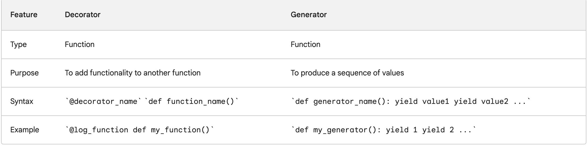

concepts
Basic programming terms
property decorator
The @property decorator in Python is used to define methods that are accessed like attributes, providing a way to implement computed properties or control access to class attributes. It allows you to define a method that can be accessed as if it were an attribute, without the need to explicitly call it as a method.
class Circle:
def __init__(self,radius):
self.radius = radius
@property
def diameter(self):
return self.radius
@diameter.setter
def diameter(self,value):
if value > 0:
self.radius=value
@diameter.deleter
def diameter(self):
del self.radius
@property
def area(self):
return 3.14 * self.radius**2
mycircle=Circle(2)
mycircle.diameter=10 # you can use method as an attribute.
print(mycircle.diameter)
print("setter")
mycircle.diameter=0
print(mycircle.diameter) # Output: 10, since the value is set to 0, it would output the previous value associated in the object.
print("deleter")
del mycircle.diameter
print(mycircle.diameter) # raise an exception as the circle object has deleted the 'radius' attribute
abstract classes
Abstract classes are those classes that can't be instantiated directly, it would only serve as a blue print. They are always designed to be subclassed and they would contain abstractmethod that must be implemented by their subclass.
from abc import ABC, abstractmethod
class Animal(ABC):
@abstractmethod
def make_sound(self):
pass
When you are trying to instantiated animal=Animal(), it would throw an error.
Error: Can't instantiate abstract class Animal with abstract methods make_sound
Now, you would have an subclass of Animal that uses an abstractmethod
class Dog(Animal):
def make_sound(self):
print("Woof")
class Cat(Animal):
def make_sound(self):
print("Meow")
dog=Dog()
dog.make_sound() # Output: Woof
cat=Cat()
cat.make_sound() # Output: Meow
first class functions
If a function can be assigned to a variable or passed as object/variable to other function, that function is called as first class function
example-1
def square(x):
return x*x
def cube(x):
return x*x*x
# Receives a function, executes and returns result. You will provide as an list here
def mymap(func,args):
result = []
for each_item in args:
result.append(func(each_item))
return result
sqr=mymap(square,[1,2,3]) # Output: [1,4,9]
cub=mymap(cube,[1,2,3]) # Output: [1,8,27]
# provide a single value to get the result.
def print_result(x, func):
"""recieve a function and execute it and return result"""
return func(x)
do_square = square # assigning square function to a variable
do_cube = cube # assigning cube function to a variable
res = print_result(5, do_square) # passing function to another function
example-2
We would use first-class function to create an html tag
def create_html(tag):
def wrap_text(text):
print(f"<{tag}>{msg}/<{tag}>")
return wrap_text
create_html would return the fucntion(wrap_text), we would use that function to call our msg wrapped in the html msg.
print_h1=create_html("h1")
print_h1("Heading1") # Output: <h1>Heading1</h1>
decorator
A decorator is a function that takes another function as an argument and returns a modified version of the function. Decorators are often used to add functionality to functions, such as logging, timing, or error handling.
def log_function(func):
def wrapper(*args, **kwargs):
print("Calling function:", func.__name__)
result = func(*args, **kwargs)
print("Function returned:", result)
return result
return wrapper
@log_function
def my_function(x, y):
return x + y
print(my_function(1, 2))
A generator is a function that produces a sequence of values, one at a time. Generators are created using the yield keyword. Generators are useful for a variety of tasks, such as filtering a sequence of values, transforming a sequence of values, or iterating over a large sequence of values without storing the entire sequence in memory.
def read_file(filename):
with open(filename, 'r') as f:
for line in f:
yield line
for line in read_file('my_file.txt'):
print(line)

def timeit(func):
def wrapper(*args, **kwargs):
start = time.time()
result = func(*args, **kwargs)
end = time.time()
print("Time taken to execute function:", end - start)
return result
return wrapper
@timeit
def factorial(n):
print("Without using cache decorator")
return n*factorial(n-1) if n else 1
print(factorial(5))
closures
example-1
Python closure is a nested function that allows us to access variables of the outer function even after the outer function is closed.
def outer_function():
messge="Hi"
def inner_function():
print(messge) # you would be able to access the variable of outer function.
return inner_function()
hi=outer_function() # Output: Hi
example-2
let's modify the code and we could store the inner_function as variable and then call return value
def outer_function(message):
messge=message
def inner_function():
print(messge) # you would be able to access the variable of outer function.
return inner_function
print_hi=outer_function("hi")
print_hello=outer_function("hello")
print(print_hi.__name__) # Output: inner_function
print(print_hello.__name__) # Output: inner_function
print_hi() # Output: hi
print_hello() # Output: hello
example-3
let's use closure to add and subtract example, additionally while doing so, we could log it in the file example.log
import logging
logging.basicConfig(filename="example.log",level=logging.DEBUG)
def logger(func):
def log_func(*args):
logging.info(f"logging {func.__name__} with arguments {args}")
print(func(*args))
return log_func
def add(x,y):
return x+y
def sub(x,y):
return x-y
add_logger=logger(add)
sub_logger=logger(sub)
print(add_logger.__name__) # Output: log_func
print(sub_logger.__name__) # Output: log_func
add_logger(4,5) # Output: 9
sub_logger(20,10) # Output: 10
shallow & deep copy
A shallow copy creates a new object but references the same elements as the original object. In other words, it creates a new container object and fills it with references to the same elements as the original. The references point to the same memory addresses as the original elements. If any of the referenced elements are mutable, changes made to them will be reflected in both the original and the shallow copy.
You can think of "hardlink" in linux prespective.
import copy
list1 = [1, 2, [3, 4]]
list2 = copy.copy(list1)
list2[0] = 5
list2[2].append(5)
print(list1) # Output: [1, 2, [3, 4, 5]]
print(list2) # Output: [5, 2, [3, 4, 5]]
Usecase of shallow copy
Cloning mutable objects: Shallow copy is often used when you want to create a new object that shares the internal state with the original object. This can be useful when working with mutable objects like lists or dictionaries, where you want to create a modified version while preserving the original.
Performance optimization: Shallow copy can be more efficient in terms of time and memory when dealing with large objects or data structures. Instead of duplicating the entire object, a shallow copy simply creates references to the existing elements.
Nested data structures: Shallow copy is appropriate when you have nested data structures, such as a list of lists or a dictionary of dictionaries. It allows you to create a new structure that maintains references to the original nested objects.
Deep Copy:
A deep copy creates a new object and recursively copies all the elements from the original object to the new object. It creates a completely independent copy with its own set of elements. Any changes made to the copied elements will not affect the original object.
softlink from linux prespective.
import copy
list1 = [1, 2, [3, 4]]
list2 = copy.deepcopy(list1)
list2[0] = 5
list2[2].append(5)
print(list1) # Output: [1, 2, [3, 4]]
print(list2) # Output: [5, 2, [3, 4, 5]]
usecase of deep copy
Creating independent copies: Deep copy is used when you want to create a completely independent copy of an object and its internal state. This is useful when you need to modify the copied object without affecting the original object.
Avoiding unintended side effects: Deep copy ensures that any modifications made to the copied object or its nested elements do not impact the original object. This can be important when dealing with complex data structures or when multiple objects need to maintain their own separate state.
Immutable objects: Deep copy is suitable for creating copies of immutable objects, such as strings or tuples, where modifying the object is not possible. Deep copy allows you to create a new object with the same value.